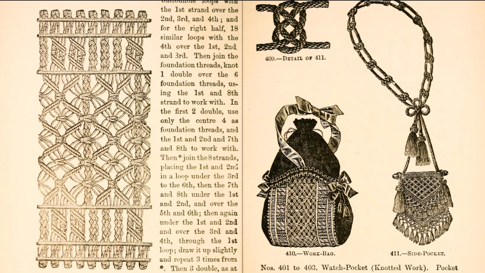
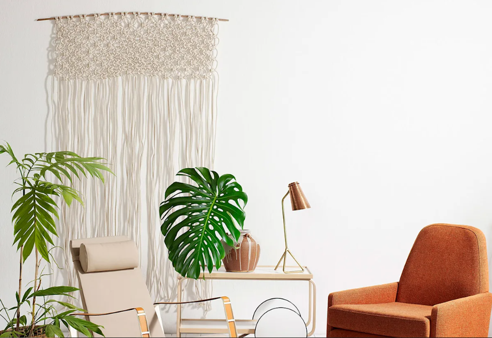
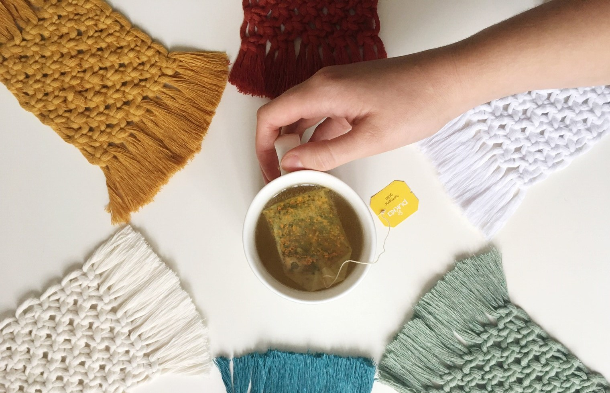
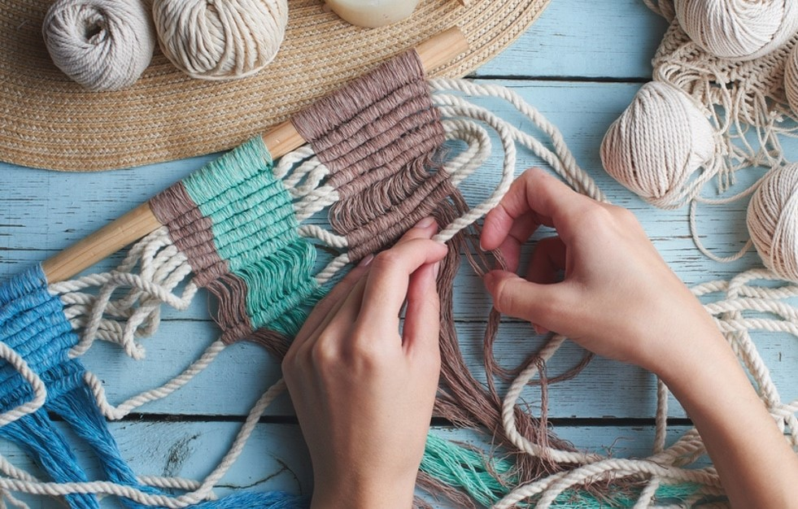

Historia del macramé
En esta sección exploraremos la historia y origen del macramé, sus raíces culturales y cómo ha evolucionado a lo largo del tiempo.
El macramé, una antigua técnica de tejido manual, tiene una rica historia que se remonta a civilizaciones ancestrales. Desde los egipcios y persas hasta los árabes y europeos, el macramé ha sido apreciado y practicado en diferentes culturas alrededor del mundo. Sus intrincados nudos y diseños han perdurado a lo largo del tiempo, convirtiéndolo en un arte fascinante y expresivo. Descubre la historia del macramé y sumérgete en su belleza tejida a mano que ha cautivado a generaciones durante siglos.
Descubre las últimas tendencias y encuentra inspiración en diseños innovadores, combinaciones de colores o patrones populares.
Explora la fascinante combinación de inspiración y tendencias en el macramé. Este antiguo arte ha resurgido con fuerza, atrayendo a diseñadores y amantes de la creatividad. Descubre patrones intrincados, colores atrevidos y diseños innovadores. Déjate inspirar por la belleza única del macramé y únete a esta tendencia creativa. Sumérgete en un mundo cautivador donde la imaginación se libera a través de los nudos y las cuerdas. Descubre cómo el macramé puede dar vida a tu hogar y brindar una nueva dimensión artística a tu vida.
Te daremos consejos prácticos sobre limpieza y conservación de las piezas.
Descubre los secretos para mantener tus piezas de macramé en excelente estado. Aprende las mejores prácticas de cuidado y mantenimiento que prolongarán la vida de estas obras de arte tejidas a mano. Explora técnicas suaves de limpieza para eliminar el polvo y las manchas sin dañar las delicadas fibras. Descubre cómo proteger tus piezas de la luz solar y evitar el contacto con sustancias corrosivas. Además, aprende la importancia de un almacenamiento adecuado para prevenir posibles daños.
Descubre cómo esta actividad puede ayudarte a reducir el estrés y promover la relajación.
El macramé te brinda la oportunidad de enfocar tu mente en un proyecto tangible, permitiéndote desconectar del estrés diario. A través de la concentración y la paciencia necesarias, desarrollarás habilidades que fomentan la atención plena y te conectan con el momento presente. Descubre cómo el macramé puede ser una actividad terapéutica que mejora tu salud emocional y mental.